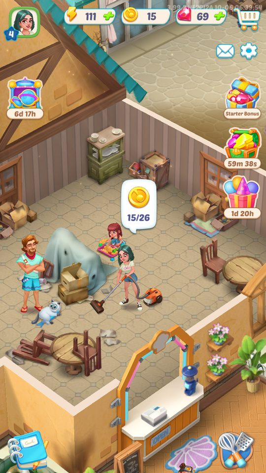
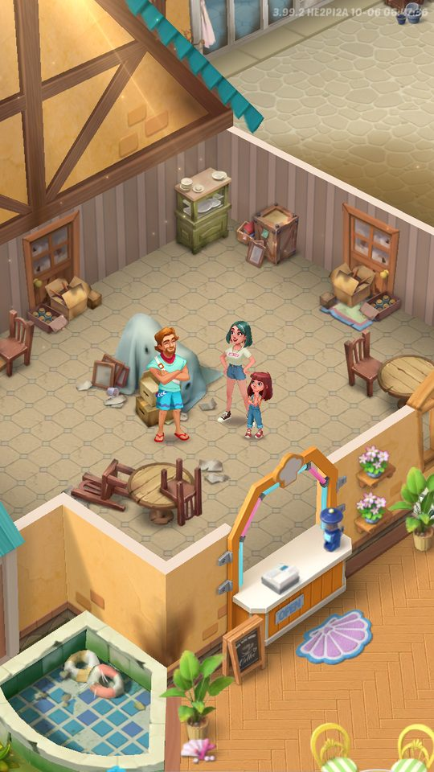
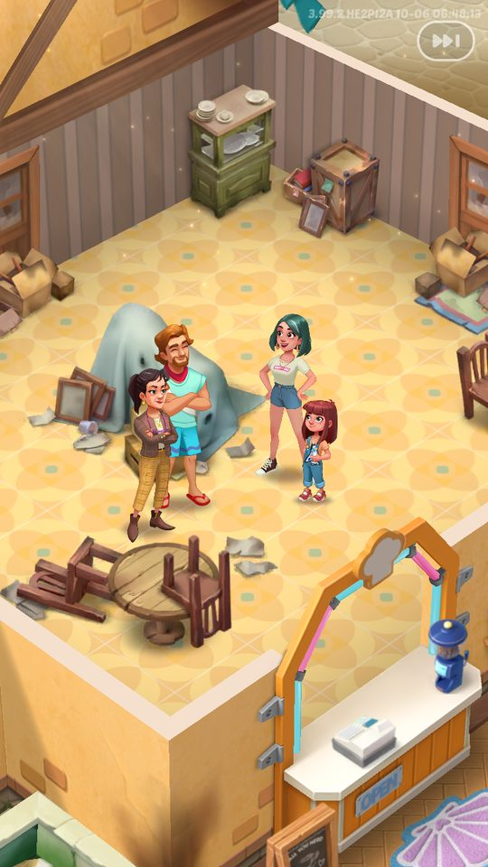

Ảnh chụp màn hình
Bản đồ thị trấn cảng Brimwave là phần 'trang trí/phục hồi' của Gossip Harbor: mỗi nhiệm vụ cốt truyện đổi một hoặc nhiều 'slot' trên bản đồ từ trạng thái đổ…
Mô tả
- Bản đồ thị trấn cảng Brimwave là phần 'trang trí/phục hồi' của Gossip Harbor: mỗi nhiệm vụ cốt truyện đổi một hoặc nhiều 'slot' trên bản đồ từ trạng thái đổ nát sang đã sửa/trang trí, và mở dần các khu vực mới cùng nhân vật mới.
- Dữ liệu đóng gói có 8.129 mục bản đồ trong khoảng 48 khu vực (Area1–Area39 theo khu, Area40–Area48 chia lát theo ngày 210–248), 44 prefab nhân vật đi lại trên bản đồ, biểu cảm giao đơn/kể chuyện cho từng nhân vật và các minh họa cảnh (Spine/Timeline).
- Phần lớn slot nằm trên CDN (nhóm map-remoteslots 270 bundle, map-fixitemremote1 theo khu) và được nạp theo vùng nhìn thấy.
Còn thiếu / chưa xác minh
Mở khóa & điểm vào
Area0Local/Area1 có sẵn trong APK; các khu vực sau mở theo tiến trình nhiệm vụ (Timeline_UnlockArea) và tải từ CDN khi cần.
Điểm vào:
- Màn chính (cuộn/zoom bản đồ phía sau bảng merge)
- Timeline mở khu vực
- Hộp thoại tải lại tài nguyên bản đồ (map_reload_confirm_*)
Cách hoạt động
- Bản đồ được chia thành các slot; mỗi slot có danh sách biến thể (SlotProxy.m_items) và chỉ số hiện tại (currentIndex) tương ứng tiến trình nhiệm vụ.
- SlotLoader nạp cấu hình kích thước (SlotBoundsConfigList) rồi xếp hàng tác vụ nạp prefab theo độ ưu tiên (HIGH/MEDIUM/LOW_PRIORITY, tối đa s_maxRunningTasks tác vụ song song); SlotBounds báo khi slot vào/ra vùng camera (OnBecameVisible/Invisible) để nạp hoặc ẩn.
- Khi người chơi hoàn thành nhiệm vụ, slot đổi biến thể (SetItem/SetItemAsync) kèm hiệu ứng; nhiệm vụ mở khu vực phát Timeline_UnlockArea và UnlockAreaAnimation.
- Nhân vật (RoleConfig) đi lại theo khu đã mở; khách giao đơn dùng biểu cảm OrderExpression; hội thoại dùng StoryExpression; vài khoảnh khắc lớn dùng minh họa Spine (cháy nhà khách, rơi máy bay, bỏ phiếu…).
- Theme 'in season' đổi màu UI theo bảng InseasonConfig (đang tắt: isEnabled = 0) với hiệu ứng chuyển cảnh transition_InSeason.
- Nếu thiếu tài nguyên, game yêu cầu tải lại (Reload Resources) mà không tốn thêm dữ liệu.
Luồng chi tiết theo code
Bản đồ được chia thành các slot; mỗi slot có danh sách biến thể (SlotProxy.m_items) và chỉ số hiện tại (currentIndex) tương ứng tiến trình nhiệm vụ. SlotLoader nạp cấu hình kích thước (SlotBoundsConfigList) rồi xếp hàng tác vụ nạp prefab theo độ ưu tiên (HIGH/MEDIUM/LOW_PRIORITY, tối đa s_maxRunningTasks tác vụ song song); SlotBounds báo khi slot vào/ra vùng camera (OnBecameVisible/Invisible) để nạp hoặc ẩn. Khi người chơi hoàn thành nhiệm vụ, slot đổi biến thể (SetItem/SetItemAsync) kèm hiệu ứng; nhiệm vụ mở khu vực phát Timeline_UnlockArea và UnlockAreaAnimation. Nhân vật (RoleConfig) đi lại theo khu đã mở; khách giao đơn dùng biểu cảm OrderExpression; hội thoại dùng StoryExpression; vài khoảnh khắc lớn dùng minh họa Spine (cháy nhà khách, rơi máy bay, bỏ phiếu…). Theme 'in season' đổi màu UI theo bảng InseasonConfig (đang tắt: isEnabled = 0) với hiệu ứng chuyển cảnh transition_InSeason. Nếu thiếu tài nguyên, game yêu cầu tải lại (Reload Resources) mà không tốn thêm dữ liệu.
Ảnh chụp màn hình (3)
3 ảnh chụp trong game (BlueStacks/LDPlayer, tài khoản cấp 4). Bấm ảnh để phóng to; nhãn UC dẫn tới use case tương ứng.






Use case (6)
Bấm vào từng use case để mở. Mở/đóng tất cả
UC-01 Sửa/trang trí đối tượng sau nhiệm vụ
Các bước- Nhiệm vụ hoàn thành
- SlotProxy chuyển currentIndex sang biến thể mới
- Nạp prefab biến thể (SetItemAsync) và phát hiệu ứng
| Actor | System |
|---|---|
| Trigger | Hoàn thành nhiệm vụ cốt truyện |
| Điều kiện | Slot tương ứng đã nạp |
| Kết quả | Bản đồ hiển thị trạng thái mới |
| Quy tắc / số liệu | Tên mục bản đồ dạng <khu>_<nhóm>_<biến thể> (vd 1_1_0 … ) và special_order_<n>_1 |
| Evidence | SlotProxy.SetItem, SetItemAsync, get_currentIndex/set_currentIndex; MapConfig shortName |
UC-02 Nạp slot theo vùng nhìn
Các bước- SlotBounds.OnBecameVisible
- SlotProxy.OnBecomeVisible → AddLoadTask
- SlotLoader.Update chạy tác vụ theo GetPriority
| Actor | System |
|---|---|
| Trigger | Camera di chuyển/zoom |
| Điều kiện | — |
| Kết quả | Chỉ nạp vùng đang nhìn, giảm bộ nhớ |
| Quy tắc / số liệu | Ưu tiên HIGH/MEDIUM/LOW; giới hạn tác vụ đồng thời s_maxRunningTasks |
| Evidence | SlotLoader.AddLoadTask/GetPriority/Update/Load; SlotBounds.Active/Deactive/OnBecameVisible/OnBecameInvisible |
UC-03 Mở khu vực mới
Các bước- Phát Timeline_UnlockArea
- UnlockAreaAnimation
- Tải bundle khu vực từ CDN nếu chưa có
| Actor | System |
|---|---|
| Trigger | Nhiệm vụ mở khu vực |
| Điều kiện | — |
| Kết quả | Khu vực mới cùng nhân vật/khách mới |
| Quy tắc / số liệu | Khoảng 48 khu vực |
| Evidence | UnlockAreaAnimation; UI/TimelineRemote/Timeline_UnlockArea; nhóm CDN map-fixitemremote1_assets_area0remoteXareaYY |
UC-04 Tải lại tài nguyên bản đồ
Các bước- Hộp thoại Reload Resources
- Bấm Reload
| Actor | Player |
|---|---|
| Trigger | Thiếu/lỗi tài nguyên |
| Điều kiện | — |
| Kết quả | Nạp lại tài nguyên, không tốn thêm dữ liệu |
| Quy tắc / số liệu | — |
| Evidence | text map_reload_confirm_* |
UC-05 Theme theo mùa
Các bước- Chuyển cảnh transition_InSeason
- Đổi màu chữ/viền/ảnh UI theo type màu
| Actor | System |
|---|---|
| Trigger | Mùa sự kiện bật InSeason |
| Điều kiện | InseasonConfig.isEnabled |
| Kết quả | Giao diện đổi theme |
| Quy tắc / số liệu | isEnabled = 0 trong bản đóng gói; 10 type màu |
| Evidence | InseasonConfig, InseasonImage, InseasonTextColor, InseasonOutlineColor; tải ngầm TransitionInSeason, MapInseason |
UC-06 Sự kiện trang trí kết thúc
Các bước- Thông báo 'Decoration Event Over!'
| Actor | System |
|---|---|
| Trigger | Hết hạn sự kiện trang trí |
| Điều kiện | — |
| Kết quả | Đóng sự kiện (xem MiniGameEvents/MainDecor) |
| Quy tắc / số liệu | — |
| Evidence | text decoration_event_general_extend_title |
Cấu hình (6)
Gộp mọi nguồn: const trong code, JSON mặc định trong Resources, bảng static, storage key, AB test, cờ server.
| Nguồn | Key | Kiểu | Giá trị | Ý nghĩa | Nơi định nghĩa |
|---|---|---|---|---|---|
| asset | MapConfig | ResConfig | 8.129 mục; Area1 16, Area2 65, …, Area25 259, Area38 216; Area0Local 164; Area40_210..Area48 theo ngày | Danh mục prefab slot bản đồ | Assets/DataConfig/MapConfig.asset |
| asset | RoleConfig | ResConfig | 44 nhân vật (Quinn, Sam, Olivia, Harrison, Mark, Norman, Amala, Carmen, Coconut, Colton, Lori, Riley, Sophia, Vance, Ziva, Zorkee, Imelda, Dominic, Saul, Frankie, Bruno, Crane, Ramona, Tony, Atlas, Babette, Bob, Heidi, …) | Nhân vật đi lại trên bản đồ, kèm biến thể (Quinnbuild, Sambuild, Oliviaplay, Vancelie…) | Assets/DataConfig/RoleConfig.asset |
| asset | CustomerConfig | ResConfig | 6 (Amala, Celia, Lily, Lucy, Norman, Riley) | Khách trên bản đồ | Assets/DataConfig/CustomerConfig.asset |
| asset | InseasonConfig | ScriptableObject | isEnabled 0; changeTransition 1; 10 type màu; preload inseason_checkerboard_cache_queue_bg | Theme theo mùa | Assets/DataConfig/InseasonConfig.asset |
| asset | Minh họa cảnh | prefab | Returning (A15), harrison_down (A16), GuestHouse_Fire (A28), Air_crash (A38), Vote (A45), speedboat (A6) | Cảnh Spine/Timeline cho khoảnh khắc truyện lớn | AreaRes/StoryIllustration, TimelineIllustration |
| asset | CDN bản đồ | bundle | map-remoteslots 270, rolesandstoryremote 149, rolesandstorylocal 51, eventskins 56, skins 56, map-fixitemremote1 theo khu | Nội dung bản đồ tải từ CDN | catalog_3.99.0.json |
Giao diện (UI)
| Element | Class | Mục đích |
|---|---|---|
| Biểu cảm khách | AreaRes/OrderExpression/<Area>/<Name>_order | Khách giao đơn |
| Biểu cảm kể chuyện | AreaRes/StoryExpression/<Area>/<Name> | Nhân vật trong hội thoại |
| Chuyển cảnh mùa | UI/Transition/InSeason/transition_InSeason | Đổi theme |
| Bình chữa cháy | Map/Area29/Extinguisher | Đối tượng tương tác bản đồ (khu 29) |
Storage keys
slot newSkin
Chưa đọc được / ghi chú
- Ánh xạ nhiệm vụ → slot/biến thể nằm trong cấu hình mã hóa (DynamicConfig) — không đọc được
- Số khu vực chính xác suy từ tên thư mục (≈48)
Tính năng liên quan
Nhiệm vụ cốt truyện Nhân vật & độ thân thiết CG mở đầu & tutorial Hạ tầng: tải, hotfix, mạng, Lua Sự kiện mini-game
Nguồn đã đọc
- notes/packs/MapAreas.md
- appendix/res-registries.md
- appendix/addressables-groups.md
- dump.cs (SlotLoader, SlotProxy, SlotBounds, InseasonConfig, UnlockAreaAnimation)